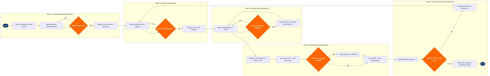

| Step | L4 Step Name | KPI / Target | Pain Point / Risk | Gate |
|---|---|---|---|---|
| 1.1 | Extract booking & no-show history from PSS | Dataset completeness ≥99% of departed flights | Altéa PSS history exports require manual scheduling; ad-hoc pulls risk data truncation beyond 13-month rolling window | |
| 1.2 | Segment data by route, DOW, fare class, season | Minimum 90 observed flights per segment for statistical significance | Thin markets (<5 flights/week) produce unreliable segment-level no-show rates; pooled estimates inflate overbooking risk | |
| 1.3 | Run no-show forecast model and validate accuracy | Forecast vs. actual no-show rate MAPE ≤5% | NRM show-up model requires retraining after major schedule restructures; post-COVID demand patterns invalidated legacy curves for 18+ months | ⚠ |
| 1.4 | Calibrate show-up curve by fare class and lead time | Show-up curve refresh cycle ≤30 days for high-frequency routes; ≤90 days for seasonal routes | Fare class proliferation (Basic Economy vs. flexible fares) requires separate show-up curves; legacy model treats all economy as one class | |
| 2.1 | Generate recommended OB factors by flight segment | Expected IDB rate ≤0.05 per 10,000 enplaned passengers (DOT Part 250 benchmark) | NRM OB optimiser does not natively model denied boarding compensation cost per DOT 14 CFR 250 tiers; analyst must manually adjust factors to avoid regulatory overshoot | |
| 2.2 | Apply DOT 14 CFR 250 regulatory cap and fare rule check | 100% of OB factors within DOT involuntary bump compensation trigger thresholds | Non-refundable Basic Economy fares have near-zero pre-departure cancellations, artificially inflating apparent show-up rates; ATPCO Rule 35 interactions must be hand-checked | ⚠ |
| 2.3 | Approve and publish booking limits to PSS inventory | Limit publication latency ≤4 hours ahead of booking horizon open; 100% of flights have an active OB limit | Altéa inventory control updates via batch file load — real-time limit changes mid-booking horizon require manual override in Altéa Inventory module, increasing error risk | |
| 3.1 | Monitor booking pace vs. authorised OB limits | Alert response time ≤15 minutes of threshold breach detection | NRM booking pace alerts are polled every 30 minutes; fast-filling charter diversions or flash sales can exceed limits before alerts trigger | |
| 3.2 | Detect and triage oversale threshold breach | False positive rate ≤10% of alerts triaged as high-risk | Group booking blocks held in Altéa GRP segment are excluded from NRM oversale count until confirmed, masking true capacity exposure up to T-72h | ⚠ |
| 3.3 | Adjust OB level or close booking class dynamically | OB adjustment applied within 30 minutes of triage decision; no flight departs with OB factor >20% above baseline | Closing discount booking classes to reduce oversale pressure destroys revenue on price-sensitive leisure itineraries; analyst must balance IDB risk vs. yield impact | |
| 3.4 | Escalate high-risk oversale flights to RM Supervisor | Escalation-to-decision cycle time ≤1 hour; 100% of high-risk flights reviewed by T-24h | Connecting passengers on interline itineraries (not native Altéa bookings) are not surfaced in NRM oversale count; last-minute IDB on these passengers triggers DOT reporting obligation | |
| 4.1 | Identify oversold flights at check-in closure | Oversold flight identification completed ≥30 minutes before departure | SITA AMS and Altéa DCS (Departure Control System) seat count reconciliation can diverge by 1-2 seats when upgrade or UMNR seat blocks are reassigned at gate | |
| 4.2 | Solicit and screen volunteers for VDB compensation | VDB rate ≥80% of oversale situations resolved without IDB; average VDB compensation cost ≤$350 | Compensation authority is set centrally by RM; gate agents cannot negotiate above the pre-approved cap without supervisor override, slowing volunteer acquisition on high-demand flights | ⚠ |
| 4.3 | Process involuntary denied boarding per 14 CFR 250 | IDB processing completed ≥15 minutes before door close; 0 IDB passengers with connecting flights missed due to rebooking delay | DOT priority boarding rules (status, early check-in) conflict with RM desire to protect high-yield last-minute fares; applying the correct matrix under gate pressure is error-prone | |
| 4.4 | Issue compensation and confirm rebooking for IDB/VDB pax | 100% of IDB passengers offered confirmed rebooking within 2 hours; compensation issued at gate before passenger departs | Electronic voucher issuance via Altéa is not integrated with the passenger's Rapid Rewards account; compensation is issued as a separate code, creating friction and loyalty defection risk | |
| 5.1 | Compile post-flight IDB/VDB statistics and cost data | Report generated within 48 hours of flight departure; 100% event capture rate | Gate agent IDB logs in Altéa DCS are free-text fields; structured data extraction requires ETL cleanup before Redshift load, delaying post-flight analytics by up to 5 days | |
| 5.2 | Review denied boarding KPIs against policy thresholds | IDB rate ≤0.05 per 10,000 enplaned passengers; VDB cost ≤$350 average per event | Seasonal spikes (holiday periods, irregular operations) mask underlying OB model drift; point-in-time KPI review may miss structural deterioration in show-up accuracy | ⚠ |
| 5.3 | Submit DOT quarterly denied boarding compliance report | 100% on-time filing by DOT deadline (30 days after quarter end); zero restatements | DOT requires IDB figures disaggregated by aircraft size categories; Altéa fleet-type tagging must be manually reconciled against FAA registration data to ensure accurate segment classification |